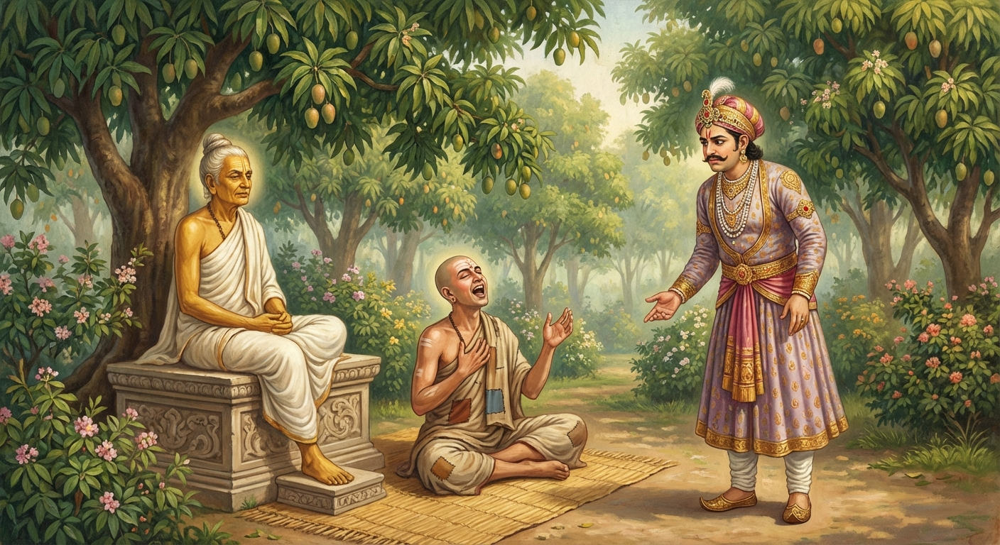

10. සුඛවිහාරි ජාතකය (10)
“යඤ්ච අඤ්ඤෙ න රක්ඛන්ති” යන මේ ජාතකය බුදුරජාණන් වහන්සේ අනුපිය නගරය ඇසුරු කොට අනුපිය අඹ වනයෙහි වැඩ වසන සේක්, සැප විහරණ ඇති භද්දිය තෙරණුවන් අරබයා වදාළහ. සුඛවිහාරී වූ භද්දිය තෙරණුවෝ, ක්ෂත්රීයයන් සය දෙනාගේ සමාගමයෙහි උපාලි නම් කපුවා සත්වැනි කොට පැවිදි වූහ. ඔවුනතුරෙන්:
- භද්දිය තෙරණුවෝ ද,
- කිම්බිල තෙරණුවෝ ද,
- භගු තෙරණුවෝ ද,
- උපාලි තෙරණුවෝ ද යන තෙරවරු රහත් වූහ.
- ආනන්ද තෙරණුවෝ සෝවාන් වූහ.
- අනුරුද්ධ තෙරණුවෝ දිවැස් ඇත්තෙක් වූහ.
- දේවදත්ත තෙර ධ්යාන ලාභියෙක් විය.
මේ සය ක්ෂත්රීයන්ගේ කථා පුවත අනුපිය නගරය දක්වා ඛණ්ඩහාල ජාතකයෙහි පහළ වන්නේය. ආයුෂ්මත් භද්දිය තෙරණුවෝ රජ කරන කල්හි තමා රැකීම සඳහා ආරක්ෂක සංවිධාන යොදා තිබියදීත්, බොහෝ රැකවලුන් විසින් තමා රකිනු ලබද්දීත්, උඩු මහළෙහි මහා යහනෙහි පෙරළෙමින් සිටියදීත් තමා බියට පත් වූ බව ද; දැන් රහත් බවට පැමිණ වන සෙනසුන් ආදියෙහි කොතැනක හැසිරෙන්නේ වුව ද පහ වූ බිය ඇති බව ද සිහි කරමින් “අහෝ සැපයි! අහෝ සැපයි!” යැයි උදන් ඇනූහ. මේ ඇසූ භික්ෂූහු “ආයුෂ්මත් භද්දිය තෙරණුවෝ තමන්ගේ රහත් බව ප්රකාශ කරතැ”යි බුදුරදුන්ට සැල කළහ. බුදුරජාණන් වහන්සේ “මහණෙනි, භද්දිය සුඛවිහාරී වූයේ දැන් පමණක් නොවේ; පෙර ද සුඛවිහාරී වූයේ යැ”යි වදාළහ. භික්ෂූහු එම අර්ථය පැහැදිලි කරන ලෙස බුදුරදුන් අයැදීයහ. බුදුරජාණන් වහන්සේ භවාන්තරයෙන් වැසී ගිය එම පුවත ප්රකට කළහ.
පෙර බරණැස් නුවර බ්රහ්මදත්ත රජ රාජ්යය කරවන කල්හි බෝසතාණෝ උසස් බමුණු මහසල් කුලයෙහි ඉපිද, කාමයන්හි ආදීනව ද පැවිද්දෙහි අනුසස් ද දැක, කාමයන් අතහැර හිමවතට පිවිස තවුස් පැවිද්දෙන් පැවිදිව අට සමවත් උපදවා ගත්හ. ඔහුට පන්සියයක් පමණ තවුස් පිරිවර විය. ඔහු වැසි කාලයෙහි හිමවතින් නික්ම තවුස් සමූහයා පිරිවරාගෙන ගම් නියම්ගම් ආදියෙහි හැසිරෙමින් බරණැසට පැමිණ රජු ඇසුරු කොට රජ උයනෙහි වාසය කළේය. එහි වැසි සාරමස විසූ ඔහු පිටත්ව යාමට රජුගෙන් අවසර විමසීය. එවිට රජතුමා “ස්වාමීනි, දැන් ඔබවහන්සේ මහලුය. හිමවතෙහි විසීමෙන් ඇති ප්රයෝජනය කුමක් ද? අතවැසියන් හිමවතට යවා ඔබවහන්සේ මෙහි ම වසන්නැ”යි ඉල්ලා සිටියේය. බෝසතාණෝ පන්සියයක් තවුසන් දෙටු අතවැසියාට පවරා “යන්න, නුඹලා මොවුන් සමඟ හිමවතෙහි වසන්න. මම මෙහි ම වසන්නෙමි”යි ඔවුන් පිටත් කර යවා තමා එහි ම විසීය.
ඒ දෙටු අතවැසියා රජ කුලයෙන් පැවිදි වූවෙකි. මහාරාජ්යයක් අතහැර පැවිදි වී කසිණ භාවනා කොට අට සමවත් ලැබූවකු විය. ඔහු තවුසන් සමඟ හිමවතෙහි වසන්නේ, එක් දවසක් ගුරුතුමන් දකිනු කැමැත්ත ඇතිව තවුසන් අමතා “ඔබලා උකටලී නොවී මෙහි ම වසන්න. මම ගුරුතුමන් වැඳ ආපසු එන්නෙමි”යි කියා ගුරුන් වෙත ගොස්, වැඳ පුදා පිළිසඳර කථා කොට තණ ඇතිරියක් අතුරා ගුරුන් සමීපයේ ම වැතිර ගත්තේය. එම අවස්ථාවෙහි ම රජතුමා “තාපසයන් දකිමි”යි උයනට ගොස් වැඳ එකත්පසෙක වාඩි විය. අතවැසි තවුසා රජු දැක නො නැගිට, වැතිර සිටි අයුරින් ම “අහෝ සැපයි! අහෝ සැපයි!” යැයි උදන් ඇනීය. රජතුමා “මේ තවුසා මා දැකත් නො නැගිට්ටේයැ”යි නොසතුටට පත්ව බෝසතුන්ට කතා කොට “ස්වාමීනි, මේ තවුසා ඇති තරම් ආහාර ගෙන, උදන් අනමින් සැප විහරණය ම කරන්නේ විය යුතුය”යි කීය. එවිට බෝසතාණෝ “මහරජ, මේ තවුසා පෙර ඔබ වැනි ම රජෙක් විය. ‘මම පෙර ගිහි කල රජසිරි විඳිමින් අවිගත් බොහෝ දෙනා විසින් රකිනු ලබන්නේ වුව ද මෙබඳු සැපයක් නො ලැබුවෙමි’යි සිතා, තමාගේ පැවිදි සැපය හා ධ්යාන සැපය අරබයා ඔහු මෙසේ උදන් අනතැ”යි පවසා, රජුට ධර්ම කථාවක් කීමට මේ ගාථාව ප්රකාශ කළහ.

“යමෙක් අන් අය විසින් රකිනු නො ලබයි ද, යමෙක් අන් අයව නො රකයි ද; මහරජ, කාමයන්හි අපේක්ෂා රහිත වූ ඒ තැනැත්තා ඒකාන්තයෙන් ම සුවසේ නිදයි.”
එහි ‘යඤ්ච අඤ්ඤෙ න රක්ඛන්ති’ යනු යම් පුද්ගලයෙක් අන් බොහෝ පුද්ගලයෝ ආරක්ෂා නො කරත් ද යන්නයි. ‘යො ච අඤ්ඤෙ න රක්ඛති’ යනු යමෙක් “මම තනිව රාජ්යය කරවමී”යි සිතා අන් බොහෝ ජනයා ආරක්ෂා නො කරයි ද යන්නයි. ‘ස වෙ රාජ සුඛං සෙති’ යනු මහරජ, ඒ දෙවැන්නකු නැති හුදකලා පුද්ගලයා කායික මානසික සැපයෙන් යුක්ත වූයේ, සුව සේ නිදයි. මෙය දේශනාවේ මුල පමණි. මෙබඳු පුද්ගලයා නිදන්නේ පමණක් නොව; යයි, සිටියි, හිඳියි, නිදයි යන සියලු ඉරියව්වල දී සැපයට පැමිණියේ ම වෙයි. ‘කාමෙසු අනපෙක්ඛවා’ යනු වස්තු කාම, ක්ලේශ කාම දෙකෙහි අපේක්ෂා රහිත වූයේ, ඡන්ද රාගය පහ වූයේ, තෘෂ්ණාව නැත්තේ වෙයි. එබඳු පුද්ගලයා සියලු ඉරියව්වල දී සැපසේ වාසය කරයි, මහරජ.
රජතුමා ධර්ම දේශනාව අසා සතුටු සිතින් වැඳ සිය වාසස්ථානයට ම ගියේය. අතවැසියා ද ගුරුන් වැඳ හිමවතට ම ගියේය. බෝසතාණෝ වනාහි එහි ම වෙසෙමින් නො පිරිහුණු ධ්යාන ඇත්තේව, කළුරිය කොට බ්රහ්ම ලෝකයෙහි උපන්හ.
බුදුරජාණන් වහන්සේ මේ ධර්ම දේශනාව ගෙනහැර දක්වා, කථා වස්තූන් දෙක දේශනා කොට, පූර්වාපර සන්ධි ගළපා ජාතකය නිමවා වදාළ සේක. “එකල්හි අතවැසියා නම් මේ භද්දිය තෙරණුවන් ය. ගණ ශාස්තෘවරයා වූයේ මම ම වෙමි.”
සුඛවිහාරි ජාතක වර්ණනාව දසවැනියි.
පළමු වන අපණ්ණක වර්ගයයි.
එහි උද්දානය (සාරාංශ ගාථාව) මෙසේයි:
අපණ්ණක, වණ්ණුපථ, සේරිව, චූළසෙට්ඨි, තණ්ඩුල, දේවධම්ම, කට්ඨවාහන, ගාමණි, මඝදේව සහ (සුඛ)විහාරි යන මොහු මේ වර්ගයෙහි අඩංගු ජාතක දසය යි.